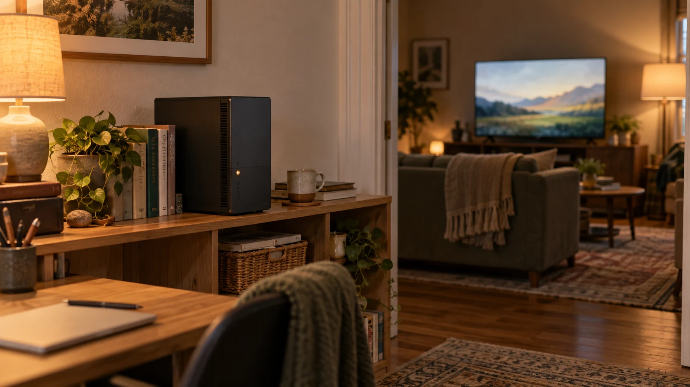

Beebo for Linux (beta)
Beebo for Linux is the same desktop media server as the Windows version, packaged as an AppImage and a .deb. Version 0.1.58 is a beta: it was built and tested on Ubuntu 22.04 in our automated build only, and it has no automatic updates yet.
Testers wanted — posted . We need testers on real Linux PCs. Real feedback earns a lifetime streaming pass. Help test Linux →

Status: Available now — Beta (Linux, 0.1.58) Published September 21, 2026 with Beebo for Windows 0.1.58. Please read the honest limits before you install.
Download Beebo for Linux 0.1.58
| File | Size | SHA-256 |
|---|---|---|
| Beebo-Entertainment-0.1.58-amd64.deb Ubuntu and Debian | 214,955,956 bytes (about 215 MB) | 5a502b5e31cf09c194cf1e1b1b5e793cc2756a3d2e51c5c254df37fdba191d41 |
| Beebo-Entertainment-0.1.58-x86_64.AppImage Most other distributions | 266,037,578 bytes (about 266 MB) | 35627fe88462014ebd0b6c7109c477eb4eee5fedba6425d959415c851e02e280 |
| SHA256SUMS-linux-0.1.58.txt Checksums for both files | small text file |
The files are hosted on the Beebo 0.1.58 release page on GitHub. To check a download, put the checksum file next to the files and run sha256sum -c --ignore-missing SHA256SUMS-linux-0.1.58.txt. Built on Ubuntu 22.04 in our automated build for 64-bit x86-64 PCs only. There is no ARM (Raspberry Pi) desktop build.
What it is
Beebo for Linux is the same desktop server as the Windows version, packaged as an AppImage and a .deb package. You point it at your own movie and show folders, and you watch on the Android app, in any web browser, or by casting to a Chromecast or Google TV. Everything else about how Beebo works is the same as on Windows.
Requirements
- A 64-bit PC (x86-64) running a glibc-based distribution such as Ubuntu 22.04 or newer.
- libfuse2 if you use the AppImage. The package name can differ between distributions.
- A graphical desktop session. This is the desktop app. A separate headless server for Docker and NAS boxes is also in beta; see Docker, NAS and Linux server.
- Your own movie and show files. Beebo includes no movies or shows.
How well it has been tested
This is a beta. It was built on Ubuntu 22.04 in our automated build and tested there only: an automated install and launch. Other distributions, desktops and real Linux PCs have not been tested by us. If it works or fails for you, please tell us.
Install steps
-
Option A: the .deb package (Ubuntu and Debian)
Download
Beebo-Entertainment-0.1.58-amd64.deb, then in a terminal in the download folder run:sudo apt install ./Beebo-Entertainment-0.1.58-amd64.debThen start Beebo from your applications menu.
-
Option B: the AppImage (most distributions)
Install libfuse2 with your package manager (the package name can differ between distributions), download
Beebo-Entertainment-0.1.58-x86_64.AppImage, and make it runnable:chmod +x Beebo-Entertainment-0.1.58-x86_64.AppImageThen run it with
./Beebo-Entertainment-0.1.58-x86_64.AppImageor double-click it in your file manager. -
Set up your library
The first time Beebo opens, create your owner account and choose your movie and TV folders, just like on Windows. The setup guide shows the same steps for Windows.
-
Let your phones and TVs reach it
Beebo serves your library on TCP port 47811. If your Linux PC has a firewall, allow that port on your home network only, for example
sudo ufw allow from 192.168.1.0/24 to any port 47811 proto tcp(change the address range to match your network). Then openhttp://<this-pc>:47811from a phone or browser on the same Wi-Fi, or type the address shown in the app.
Honest limits
- Beta. Expect rough edges, and tell us what you find.
- Tested on Ubuntu 22.04 in our automated build only. Not on other distributions or desktops, and not on real hardware by us.
- No automatic updates on Linux yet. You install new versions yourself: download the new .deb or AppImage from this page. Windows has automatic updates; Linux does not.
- Hardware video conversion on Linux is untested. VAAPI and other graphics paths have not been run on real Linux hardware, so expect conversion to use the processor.
- Saved passwords and keys are only encrypted if your system has a keyring such as GNOME Keyring or KWallet. Without one, Beebo keeps them as plain text in its settings file.
- The system tray icon has not been checked on Linux desktops yet.
- Away-from-home connections have not been tested on Linux. Watching at home on your own network is the expected first use.
Tried it? Tell us what worked and what did not, including your distribution and desktop. This is a plain email to testers@beeboentertainment.com: there is no form and no sign-up.